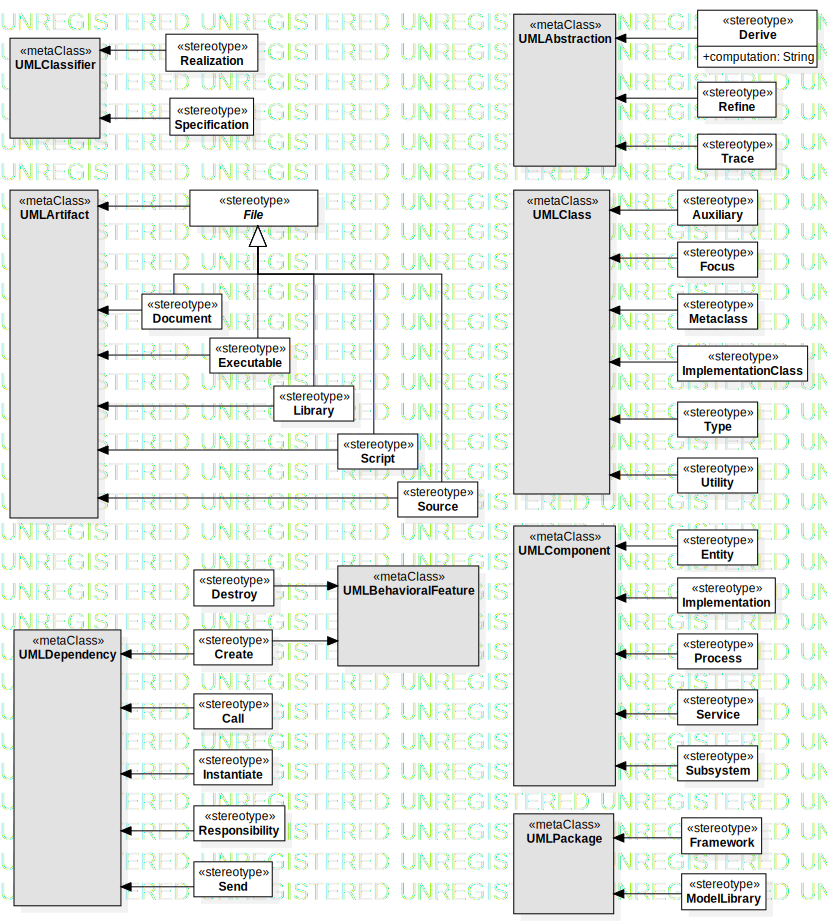
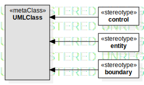
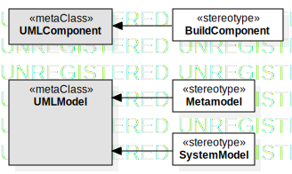

UMLStandardProfile
UMLProfile
Diagram
::
UMLStandardProfile
Description
none
Diagrams

StandardProfileL2

Robustness Stereotypes

StandardProfileL3
Properties
Name
Value
name
UMLStandardProfile
stereotype
null
visibility
public
importedElements
Owned Elements
StandardProfileL2
UMLClassifier
«Realization»
«Specification»
«entity»
UMLClass
UMLArtifact
«File»
«Document»
«Executable»
«Library»
«Script»
«Source»
UMLBehavioralFeature
«Destroy»
«Auxiliary»
«Focus»
«Metaclass»
«ImplementationClass»
«Type»
«Utility»
Robustness Stereotypes
UMLComponent
«Entity»
«Implementation»
«Process»
«Service»
«Subsystem»
UMLDependency
«Create»
«Call»
«Instantiate»
«Responsibility»
«Send»
UMLAbstraction
«Derive»
«Refine»
«Trace»
UMLPackage
«Framework»
«ModelLibrary»
StandardProfileL3
UMLModel
«BuildComponent»
«Metamodel»
«SystemModel»
«control»
«boundary»